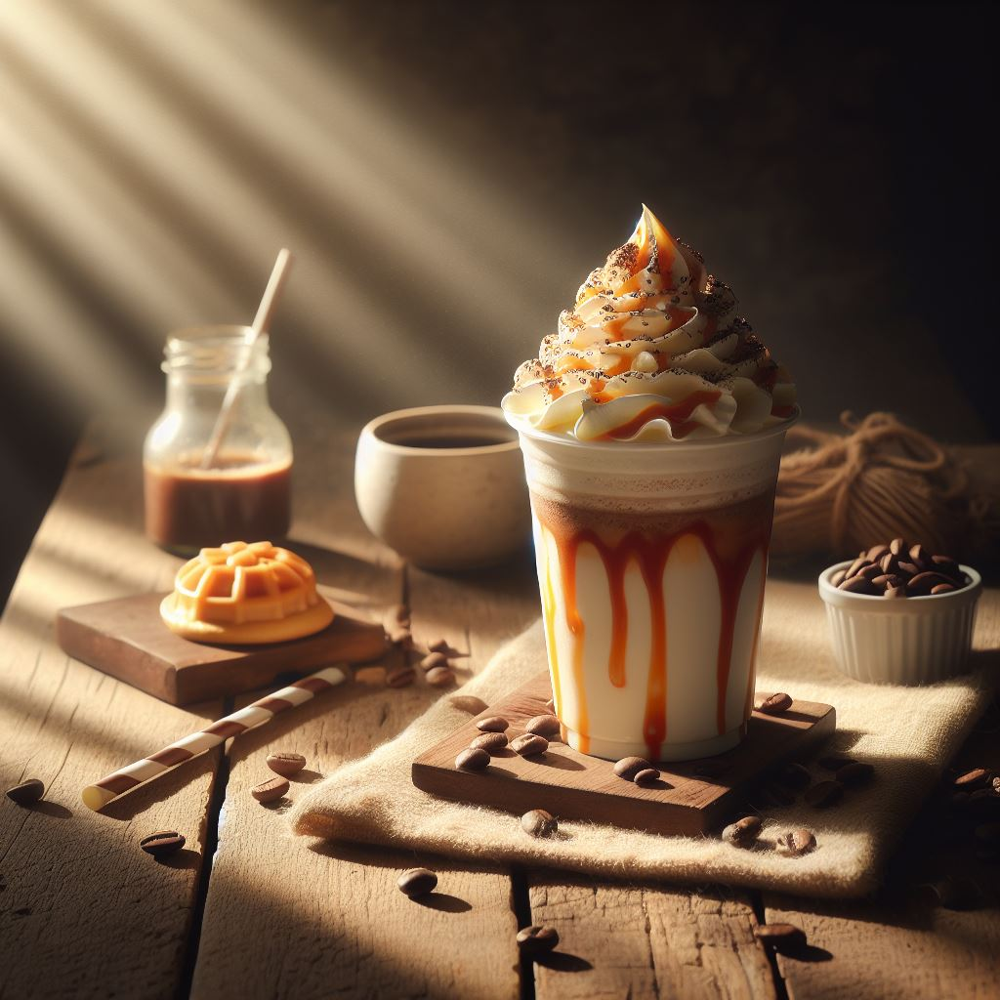

| Ingredient | Quantity |
|---|---|
| Strong brewed coffee (cooled) | 1 cup |
| Milk (dairy or non-dairy) | 1 cup |
| Granulated sugar | 2 tablespoons (adjust to taste) |
| Ice cubes | 1 cup |
| Whipped cream (optional) | As desired |
| Chocolate syrup or caramel sauce | For topping (optional) |
To make a homemade Frappuccino, start by brewing a cup of strong coffee and letting it cool. You can also use leftover chilled coffee. Once cooled, pour the coffee into a blender along with milk and granulated sugar. Add in a cup of ice cubes, then blend all the ingredients until smooth and creamy, ensuring the ice is completely crushed. Taste the Frappuccino and adjust sweetness or coffee strength as needed. Once satisfied, pour the mixture into glasses. For extra flair, top with whipped cream and drizzle with chocolate syrup or caramel sauce. Serve immediately and savor your delicious creation!
